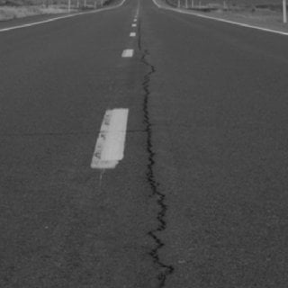
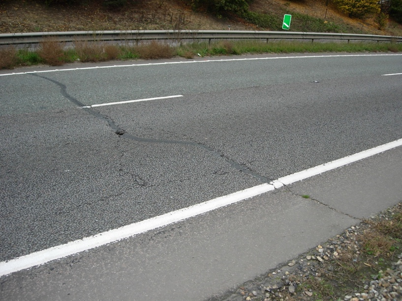
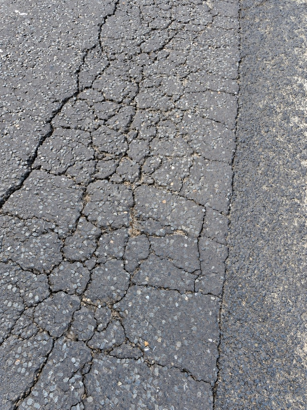
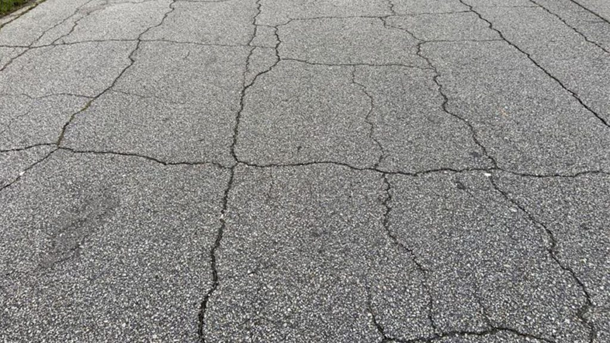
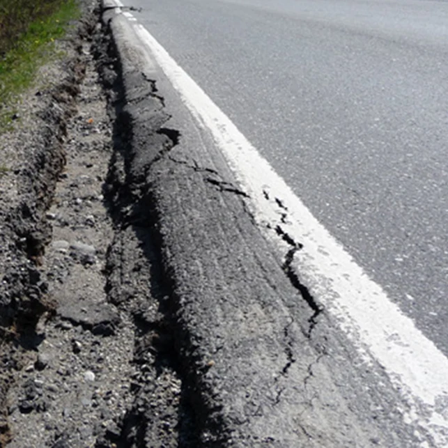
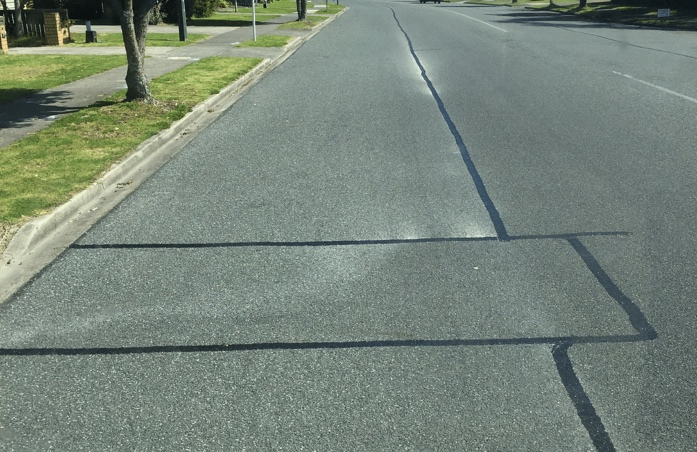
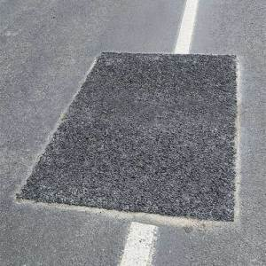
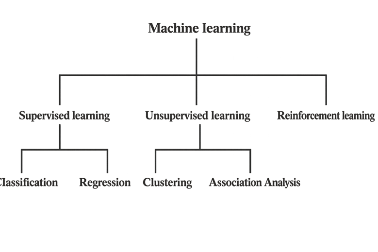
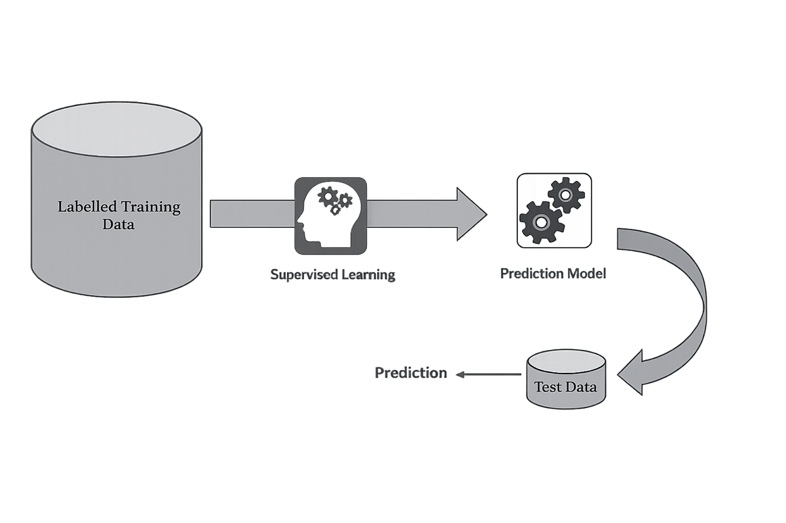

2.0 Literature Review
2.1 Fundamentals of Road Pavement Structure
Pavement engineering is fundamentally a geotechnical discipline. This is because the pavements are built on top of natural ground using materials derived from soil and rock. Then the materials go through a treatment process to prepare the material for a road. Pavements are complex engineering systems that include design, construction, monitoring and long-term asset management (Vásquez-Varela & García-Orozco, 2021).
However, pavement failure rarely results in a catastrophic structural collapse. Except in cases where an external force is applied to a road such as a landslide or a flood. Instead, pavements progressively deteriorate over time. Signs that a pavement is deteriorating are cracks and potholes. Pavements need to maintain a high level of structural performance and surface condition which is essential for safety of road users and economic efficiency (Vásquez-Varela & García-Orozco, 2021)
In New Zealand, pavement design is based on a risk-based approach, meaning that the probability of failure and consequence of the failure must be considered during design of the road. Moisture infiltration is a major aspect on pavement failure. This is highlighted by the NZ Transport Agency because moisture infiltration can reduce material strength and increase the speed of cracking and rutting (Waka Kotahi NZ Transport Agency, 2026).
Flexible pavements in New Zealand consist of multiple layers working together to evenly distribute traffic loads. These layers include the subgrade, subbase, base and wearing surface.
The subgrade is the natural soil foundation that the road is built on. This layer is normally prepared by removing the topsoil and removing unsuitable materials. Then the surface is levelled and then compacted so that the subgrade can achieve the required strength that is needed and prepares the subgrade for the subbase.
The subbase is the structural layer which is placed on top of the subgrade. It is important because it helps distribute loads from traffic, improves drainage and protect the subgrade from moisture and deformation. The subbase is made up of crushed aggregate of maximum size of 63.0mm and well-graded (Waka Kotahi NZ Transport Agency, 2025). Then the subbase is compacted using rollers to reach the desired density and get it ready for the base.
The basecourse is the primary structural layer of the flexible pavement. It is placed on top of the subbase and is under the wearing surface. Its primary function is to distribute the load from traffic and to the subbase and the subgrade. The base is primary made up of AP40 which is well-graded crushed aggregate around 40mm with stricter grading due to the strength requirements that the base must endure. The base is also compacted and prepared for the wearing surface (Waka Kotahi NZ Transport Agency, 2024).
The wearing surface is the uppermost layer and is directly exposed to traffic and environmental conditions. It is responsible for noise levels, providing skid resistance, creating a smooth riding surface, and forming a water-resistant layer to protect the underlying layers from water. In New Zealand typically the wearing surface is either asphalt or chipseal depending on traffic demand, budget and environmental conditions.
2.2 Types of Pavement Defects
There are many types of pavement defects, and they can be categorized into cracking, surface deformation, and other structural failures. These failures can happen due to repeated traffic loading, environmental exposure, moisture infiltration, or construction related defects
2.2.1 Cracking defects
Cracking defects are one of the most common forms of pavement distress. There are many types of surface cracking such as longitudinal cracking, transverse cracking, alligator cracking, blocking and edge cracking.
Longitudinal cracking as seen in figure 1, happens when the crack runs parallel to the centreline. Longitudinal cracking can occur from fatigue, where repeated traffic loading can cause the wearing surface to form cracks that run parallel to the centreline. Another reason can be from settlement issues as the sublayers may have not been compacted evenly and lastly temperature can cause the wearing surface to shrink and crack

Figure 1: Image of a longitudinal crack (Ahmad & Khawaja, 2018)
Transverse cracking, as seen in figure 2, is like longitudinal cracking except the crack runs perpendicular to the centre line. Transverse cracking primarily occurs due to thermal shrinkage and are not directly impacted by traffic loads

Figure 2: Image of a transverse crack (Golos, 2021)
Alligator cracking as seen in figure 3, also known as fatigue cracking is a sign of severe pavement distress, it is characterized by an interlocking system of cracks that resembles alligator skin. This is primarily caused by repeated traffic loading.

Figure 3: Image of alligator cracking (Golos, 2021)
Block cracking as seen in figure 4, appears as a rectangular formation and is linked to shrinkage of the binder due to aging and temperature

Figure 4: Image of block cracking (CivilEngPro, n.d.)
Edge cracking, as seen in figure 5, occurs when the edge of the pavement starts to chip off and can be caused by lack of lateral support, drainage issues, or heavy traffic loading

Figure 5: Image of edge cracking (Pavement Solutions, n.d.)
2.2.2 Surface Deformation
In New Zealand surface deformation is when there is a permanent change in the shape of the pavement surface that can be caused by traffic loading, environmental effects or structural weakness.
- Rutting is the most common surface deformation; it is caused by cumulative traffic loading and heavy traffic loads. These are bad for road users as they can trap water which can lead to hydroplaning and reduce ride quality.
- Bleeding is where asphalt binder raises to the surface and it creates a shiny black surface typically in wheel tracks and can occur in hot temperatures. Bleeding can reduce skid resistance which can cause critical health and safety hazards.
- Corrugation is when there is a regular set of small ridges and troughs often on gravel/metal roads but not as common on asphalt/paved roads. It is caused by unstable surface layers as well as vertical movement of vehicles which can cause progressive surface deformation, increasing corrugation severity.
- Shoving is form of surface deformation and is characterized by localized wrinkling. It is commonly found at intersections, traffic lights and stop signs. This can be caused by poor bonding with the underlying basecourse. Then when traffic brakes it causes a horizontal stress which then over time the wearing surface moves laterally causing shoving.
2.2.3 Surface disintegration
Surface disintegration refers to the deterioration of pavement where small aggregate particles loosen, and the surface starts to break apart. Compared to surface deformation, surface disintegration involves the loss of material from the wearing course. Surface disintegration is commonly caused by moisture infiltration, traffic loading and poor compaction
The most common forms of surface disintegration include:
- Potholes are bowl-shaped cavities that are caused when moisture infiltrates cracks in the pavement then weakens the underlying material and repeated traffic loading progressively form a pothole
- Ravelling is the progressive loss of aggregate particles from a pavement surface. It can be characterized by a loss of aggregate pavement from the asphalt binder. It can be caused by binder deterioration and traffic loading. If not treated it can lead to widespread surface disintegration
- Stripping is the loss of bond between the asphalt binder and the aggregate due to moisture infiltration. This is because when there is poor drainage or a cracked surface water can enter which leads to surface disintegration.
2.3 Pavement Defect Repair and Maintenance Strategies
Once a defect has occurred on a stretch of road it is essential that defect is repaired properly so that the road is safe to drive on. There are multiple types of treatments depending on the defect type
2.3.1 cracking sealing and crack filling
Crack sealing is undertaken to prevent water ingress into the pavement structure and to reduce further damage. This is because if moisture enters the pavement structure it can weaken the base and subbase. Under traffic loading, trapped water may generate hydraulic pressure which can accelerate pavement failure. So, by keeping the wearing surface water-resistant it can increase the lifespan of the road and delay expensive repairs later on.
Once the crack is identified, the surrounding area is inspected and prepared by cleaning the surface and removing any debris to make sure adequate adhesion to the sealant. The crack is sealed or filled based on the size of the crack, narrow cracks may be sealed with an asphaltic binder as seen in the photo below. Filler material is used on cracks that are wide and when the sealant will not be adequate. This is to make sure that the surface integrity is restored and to prevent moisture from entering the pavement structure.
In some cases, a second coat could be applied. Second coat sealing is adding a second seal layer over the first coat. This is done to increase waterproofing performance and to restore surface texture so that the seal matches the surrounding pavement.

Figure 6 Example of cracks filled with asphaltic binder to waterproof the wearing surface. Source: Sealingnz
2.3.2 pothole patching
Pothole patching is a reactive maintenance treatment which is undertaken to restore surface safety and prevent any further structural deterioration. Once a pothole is identified A small pothole is normally repaired using patches, patches are typically asphalt or any other patching materials. While these small repairs restore the ride quality, the lifespan of that patch may be limited if moisture has already entered through the wearing surface. When the pothole is much larger a mill and fill treatment may be used. This is done by removing the affected surface and replacing it with a new asphalt which is a more long-term and durable solution.

Figure 7 Example of a pothole patch repaired with asphalt. Source: Coldmix
2.3.3 surface treatments
Surface treatments are used when a wearing surface shows any surface deterioration such as chip loss and bleeding. Chip loss can include ravelling or stripping. These defects affect the surface texture and waterproofing of chipseal pavements. If chip loss is left untreated it may reduce skid resistance and allow moisture to enter the pavement structure.
There are multiple ways to treat chip loss. One method is Hot chip treatment. This is where heated aggregate is placed onto the road and then compacted into the existing binder to re-establish aggregate interlock with the binder.
Another localized treatment is diluent and chip. This is where solvent is applied to the binder already on the road before placement of small grade aggregate. This method is more temporary and a higher risk treatment to avoid flushing
Where chip loss is extensive or the road structure is showing signs of instability a more extensive treatment might be used, such as resealing, granular overlay and replacement.
2.4 Introduction to Machine Learning
Machine learning is based on an idea of getting a machine to learn from past experiences. This allows the computer system to improve its performance over time on past data which then allows the computer to stop relying on pure rules. In this project the AI model will be trained in the context of pavement defects. So instead of manually telling the AI what a crack and a pothole is, the AI will use examples so that it can learn patterns of what a crack and a pothole look like so it can recognise similar patterns once it is deployed in real-world conditions
Machine learning can be classified into three types of machine learning. These are supervised learning, unsupervised learning and reinforcement learning.

2.4.1 Supervised Learning
Supervised learning is the most used type of machine learning and is the model that will be used in this project. It is based on giving the machine past information that is directly related to the task it must perform. This information is also known as training data (O’Reilly Media, 2019).
Training data consists of an input and an output. The input is the type of information you give the AI which in this project is road defects. The expected output is a label related to that image, including its classification and a bounding box showing where in the image the defect is (O’Reilly Media, 2019).
In this road defect detection project, the AI model will be trained on types of cracks, potholes and other defects across thousands of photos across different types of pavement surfaces and lighting conditions so that the AI will be able to identify pavement defects in new unseen photos in real-world conditions (O’Reilly Media, 2019).

Figure 8 Supervised learning process (From Machine Learning (1st ed.) by S. Dutt, S. Chandramouli & A. K. Das, 2019, Pearson India)
2.4.2 Alternative Machine Learning Methods
Unsupervised learning is slightly different from supervised learning. Unsupervised learning, there is no labelled training data to start with, so the objective is that the model will try and identify natural patterns or groupings within a dataset. This type of machine learning is useful when categories are not defined. So, in this project, unsupervised learning is not needed as the categories are already defined (O’Reilly Media, 2019).
Reinforcement learning is where the machine learns without any prior knowledge of how to do the task. The machine learns by interacting with its environment and learning through reward-based feedback. This type of machine learning is how self-driving cars learn to drive. This type of learning is not applicable to static image classifications so it cannot be used for spotting defects in pavement (O’Reilly Media, 2019).
These types of machine learning methods are not used due to road defects clearly being in the supervised learning category. This is because road defects have predefined categories and reinforcement learning not being applicable to static image classifications (O’Reilly Media, 2019).
2.4.3 AI vs Machine Learning
Artificial Intelligence (AI) is a wide field and is based on machines and technology that have the ability of mimicking human functions, such as seeing, understanding, analysing data, and responding to spoken or written language. Machine Learning (ML) is a subset of AI that allows a machine or system to learn over time by using algorithms to analyse large amounts of data that the ML is given to perform specific tasks over time (O’Reilly Media, 2019).
Unlike AI systems that are rule-based or programmed by humans, ML systems learn directly from data so the more data that the ML system is given the better the model will get (Ultralysics, n.d.).
In this project, AI refers to the overall aspect of pavement defect detection system, while machine learning refers to the supervised model which is trained on labelled road images.
2.4.4 Deep learning models
Deep learning models are effective for image-based tasks. This is because it can automatically learn patterns directly from images. This is ideal because it doesn’t have to rely on manually programmed rules. According to LeCun, Bengio and Hinton (2015), at the New York University and Facebook AI research, University of Montreal and the University of Toronto, Deep learning models gradually learn complex features from the raw pixel data using multiple layers.
In practical terms, an AI deep learning model can be thought of like a building with multiple floors. Before an image enters the building, the image is split up into small pieces which can be known as a matrix of numerical pixel numbers. And each floor in the building contains many different workers for a specific job. For example, the workers (numbers) on the lower floors may identify basic features such as edges, lines and colour. While the workers on the middle floors combine these features to find changes in texture, shapes and patterns. And lastly the workers on the upper floors use the information from the lower floors to determine whether the image contains a crack, pothole or another pavement defect. However, it is not possible to know what each worker (number) does, and the model learns automatically and changes numbers on its own.
For image tasks such as finding defects in pavements, Convolutional Neural Networks (CNN) are effective for these tasks as they are made to analyse spatial information. CNNs are a type of deep learning model specifically built for working with images. This means they can find patterns and detect cracks, potholes and other defects (LeCun et al., 2015; Ultralysics, n.d.)
Traditional machine learning typically requires handcrafted feature extraction. However deep learning models learn visual features automatically which makes these models very powerful for object detection, classification and segmentation tasks. This project heavily relies on detecting pavement defects from images, so a deep learning machine model is an effective approach (LeCun et al., 2015).
2.5 Evaluation metrics
To be able to assess how well the AI model has performed, evaluation metrics are needed. These metres show the how well the model can detect and classify pavement defects. There are many types of metrics however the main types of metrics are Precision, Recall, mAP50.
Precision is the measurement of how many of the detected defects are correct. This value is measured between 0-1, where 1 represents perfect accuracy and 0 being no detections.
Recall is how many real defects the model successfully detects. This is also measured between 0-1.
mAP50 is the mean average precision at 0.5. This is main performance metric for detecting defects in pavements. This is because mAP50 evaluates how accurate the model classifies the defect and how accurate the bounding box overlaps the true defect location. mAP50 is measured between 0-1.
2.6 AI Applications in Pavement Defect Detection
Over the past decade, artificial intelligence and machine learning have increasingly been used for pavement defect detection. These systems help reduce the need for manual inspections and allow a large amount of data to be processed efficiently. In New Zealand, AI is being used more within the transport management sector. Waka Kotahi NZ Transport Agency has found some tools within the AI sector that can improve data collection and processing for improving long-term performance.
Currently in New Zealand the New Zealand Transport Agency (NZTA) uses a SCRIM+ survey vehicle to collect pavement condition data. These vehicles measure multiple factors such as skid resistance, roughness and rutting. These SCRIM+ survey vehicles travel at speeds up to 80kmh.
However, these surveys are expensive and resource intensive. The roads are typically surveyed once per year. The SCRIM program mainly focuses on state highways, which means many local roads do not get this level of monitoring. In addition, SCRIM program only measures general pavement condition metrics do not detect defects (Waka Kotahi NZ Transport Agency, 2026).
Therefore, there is a low-cost opportunity to apply artificial intelligence (AI) to assist in finding early-stage surface defects. Recently, rapid advancements in deep learning and computer vision have significantly improved the performance of image-based AI detection systems (Waka Kotahi NZ Transport Agency, 2026).
Compared to SCRIM+ surveys, the AI-based system has multiple advantages. The system will use an iPhone or a GoPro; this significantly reduces overall cost. In addition, data can be collected more often which allows the possibility for pavement defects to be identified earlier and to be monitored over time (Waka Kotahi NZ Transport Agency, 2026).
As SCRIM+ only measures general pavement condition, the AI-based system can detect specific surface defects such as cracks and potholes at the early stage. This makes it possible to repair the defect earlier. Furthermore, the AI-based system will be able to work with the SCRIM+ survey vehicles on state highways and able to be used on local roads. Therefore, improving overall network converge.
Auckland Transport has tested an AI-assisted vehicle-mounted camera system. This system is designed to automatically capture roadside data, such as Road signs, road markings and street infrastructure. This demonstrates how an image-based AI system can automatically collect data. In addition, AI has been used in New Zealand for inspections projects including drone-based crack detection on bridges. This also demonstrates that automated image-based systems are possible in New Zealand infrastructure and improve the ability to spot defects (Auckland Transport, n.d.)
In New Zealand, there is limited research on an AI specifically based on pavement defect detection. This is because many New Zealand’s chip sealed roads differ from, international datasets, which are primarily based on asphalt pavements. Because of this, models that are built overseas struggle to detect defects in New Zealand. This suggests that a locally developed AI system specifically built for New Zealand’s roads and environment would benefit New Zealand’s ability to find defects and then repair the defects before the defects develop into structural failures.
Previous research has demonstrated that deep learning models can successfully detect pavement defects from road imagery with a high level of accuracy. Many studies have investigated using convolutional neural networks (CNNS) to detect cracks, potholes and other defects. However, many of these models are trained on roads overseas which the roads differ slightly to New Zealand’s roads. This is because a large portion of New Zealand roads consist of chip seal rather than asphalt. So, models that are training overseas may not work as accuracy or consistently as in the country the AI was trained on. Therefore, there is a need to develop an AI that’s trained on New Zealand’s roads (Maeda et al., 2018; LeCun et al., 2015)